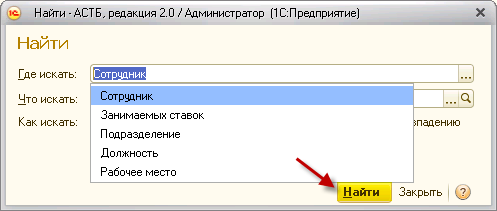

Документ по кадровому перемещению используется в случае перевода сотрудника с одной должности на другую в рамках одной организации. Чтобы выполнить перемещение необходимо зайти в раздел «Кадры», документ «Кадровое перемещение». Для добавления нового документа нажмите кнопку «Создать».
В появившейся экранной форме «Кадровое перемещение (создание)» выберите организацию. Нажмите кнопку «Добавить», а затем, нажимая на кнопку <...>, последовательно введите информацию из справочников в соответствующие поля экранной формы. В данном документе указываются должность, с которой перемещается сотрудник, и должность, на которую он будет переведен.
Для записи введенной информации нажмите кнопку «Провести и закрыть».
Чтобы не заполнять подразделение и должность по каждому сотруднику, нажмите кнопку «Подбор сотрудников». После этого откроется список сотрудников, в котором с помощью поиска можно найти нужного сотрудника и перетащить его, удерживая левую клавишу мыши, в нижнюю таблицу «Данные для переноса в таблицу», затем нажать кнопку «Перенести в документ». В предыдущем окне заполнятся данные по текущему месту работы по каждому сотруднику, останется ввести значения должности и подразделения, куда переводят сотрудника. Нажмите «Провести и закрыть».
Примечание: поиск может быть произведен по сотруднику, подразделению, должности или рабочему месту. Нажмите кнопку , после чего откроется окно поиска.

Для временного перемещения на другую должность, в документе необходимо указать дату окончания договора.

Для отмены временного перемещения необходимо открыть обработку "Отмена временного трудоустройства".